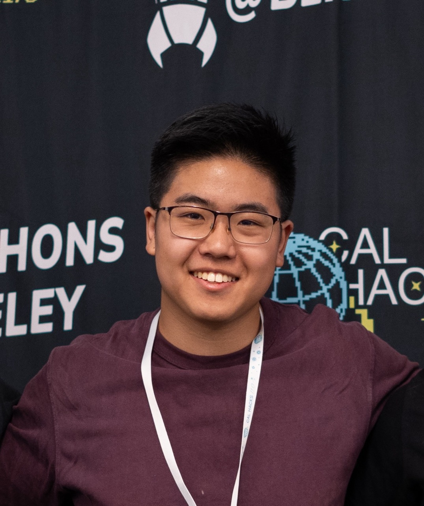

Michael Li
I am currently an undergraduate student at Carnegie Mellon University studying statistics and machine learning. In Fall 2026, I will be starting a PhD in CS at Northeastern University.
I'm interested in developing our scientific understanding of neural networks, by studying the underlying algorithms and representations they learn. More broadly, I'm excited by foundational questions about phenomena in deep learning, i.e. generalization, emergent capabilities, scaling laws, and so on.
News
Starting a CS PhD at Northeastern University in Fall 2026!
How Much Do Circuits Tell Us? Measuring the Consistency and Specificity of Language Model Circuits won a best paper award (preliminary track) at the LTI Student Research Symposium.
Model Internal Sleuthing was accepted to ACL 2026 (Main).
Presented BERTology in the Modern World at the Interplay workshop at COLM 2025.
Publications
Michael Li, Nishant Subramani.
Under review at COLM, 2026.
Michael Li, Nishant Subramani.
ACL, 2026.
Michael Li, Nishant Subramani.
Workshop on the Interplay of Model Behavior and Model Internals, COLM, 2025.
Michael Li, Fatemeh Esfahani, Li Xing, Xuekui Zhang.
Journal of Global Health, 2023.
Experience
Summer 2025.
Worked on self-supervised graph neural networks for anomaly detection.
Summer 2024.
Built a real-time drone simulator and trained RL agents with PPO to defend against drone swarms.
Summer 2023.
Developed a generative AI dialogue framework using GPT-4 and TypeScript to digitize evidence-based health interventions for Alzheimer's patients.